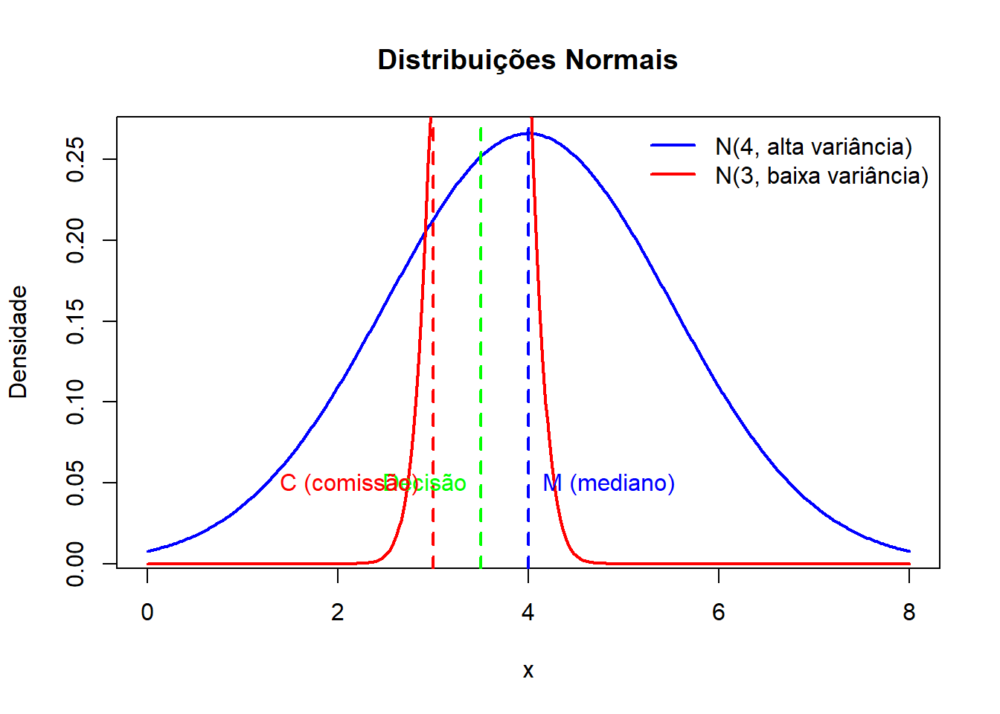

When controlling for preferences and other hypothesized effects, positive and significant party effects are rare. (Krehbiel 1993)
The premise of this study is that one important legislative function of parties is to govern by passing laws that are different from those that would be passed in the absence of parties. (Krehbiel 1993, 235)
By providing a definition of significant party behaviour that is amenable to assessing the comparative abilities of partisanship and preferences to account for behaviour, this study reaches unique conclusions that may alter the course of future studies on parties and legislatures. (Krehbiel 1993, 236)
Overall, the findings are at odds with much of the conventional wisdom about parties in legislatures. While parties and party leaders are extremely active in the legislative process, partisanship does not explain much variation in the observed stages of organizing the legislature. These findings suggest that theories of legislative politics with a party component – while perhaps more realistic that their more parsimonious non-partisan counterparts – are not necessarily superior predictors of observable legislative behaviour. (Krehbiel 1993, 236–37)
A common form of inference pertaining to the significance of parties in politics goes as follows. A phenomenon is important. Party is correlated with it. Therefore, party is important – moreover, by implication, in a causal way. […]. If, over a set of votes, the percentage of votes in which a majority of Democrats opposes a majority of Republicans is large, party is said to be important, parties are said to be strong, times are said to be partisan, etc. Likewise, if in a logit or probit estimation of a given roll-call vote, a party dummy variable has a large and significant coefficient, party is said to be important, parties are said to be strong, the vote is said to be partisan, etc.
Such inferences are not necessarily wrong, but not necessarily right either. The crucial question has to do with individual legislators’ policy preferences. In casting apparently partisan votes, do individual legislators vote with fellow party members in spite of their disagreement about the policy in question, or do they vote with fellow party members because of their agreement about the policy in question? (Krehbiel 1993, 237–38)
No primeiro caso, o partido é altamente policy-relevant; no segundo, nem tanto.
This simple illustration cautions against automatically drawing inferences about party when non-partisans explanations are readily available. In this instance, the non-partisans explanation is the most basic sort of preference-based spatial theory: legislators vote for the policy alternative nearest their ideal policies. (Krehbiel 1993, 239–40)
If standard party-voting scores cannot define party strength unambiguously, then what can? A uniquely clear and strong definition of significant party behaviour would be: behaviour that is consistent with known party policy objectives but that is contrary to personal preferences. (Krehbiel 1993, 240)
My modest aim is simply to attempt to observe significant party behaviour in places at which, a priori, one would expect it easily to be observed. If, as it turns out, significant party behaviour usually cannot be observed, then others are encouraged to perform additional empirical analysis focusing on supposedly more significant stages of party behaviour. Meanwhile, I shall assess party effects at two stages of the legislative process in the US House of Representatives: assignment of members to standing committees at the start of the Congress and assignment of members to conference committees after legislation passes the House and Senate in different forms. (Krehbiel 1993, 240–41)
Committees are widely believed to be central to the process of law making in American legislatures, and the processes and outcomes pertaining the committee assignments have been studied extensively. Most, if not all, such studies give us a strong expectation that partisanship will be manifested. (Krehbiel 1993, 241)
Thereafter, party leaders, elite committees and party caucuses become the chief units of party decision making. While intra-party committee slates ultimately must be approved by the full House, this final stage is usually regarded as pro forma.
Given this description, does it not follow immediately that the committee assignment process is significantly partisan? Perhaps counter to intuition, no, it does not. Specifically, parties or party leaders may be extremelly active in making committee assignments, yet the final composition of standing committees may be little to no different from that which would result from a process in which members’ preferences alone governed behaviour. Similarly, the apparent strategic advantage of the majority party, ceteris paribus, may in fact be non-existent. If so, then a partisan theory of committee assignments could not predict behaviour any better than its non-partisan counterpart. (Krehbiel 1993, 242)
The general point of this discussion is that – contrary to casual intuition – we cannot rely on previous empirical observations to test for significant party behaviour during the committee assignment process. Not can we infer anything about significant party behaviour from partisan rations on committees. Due to inadequacy of previous findings to address present concerns, the tests that follow are based on individual-level analysis rather than aggregate statistics. Consistent with the definition of significant party behaviour, the analysis attempts to separe preference effects from party effects. The focal issue is whether, at the individual level, majority-party status is in fact a strategic asset, as one would expect in an era of partisan resurgence within the Congress. (Krehbiel 1993, 245, grifo meu)
Três hipóteses são testadas: 1. Majority-Party Stacking: o fato de um legislador pertencer ao partido majoritário já aumenta sua chance de conseguir um assento em uma comissão, independente de suas preferências 2. Non-Partisan High Demanders: legisladores que demonstram maior interesse ou demanda por participar de certas comissões têm mais chances de conseguir assento, independentemente do partido 3. Partisan Couter-Stacking: partidos majoritário e minoritário reagem de forma oposta às preferências extremas (um valoriza quem quer muito, o outro valoriza quem não insiste tanto)
If the Democratic party systematically stacks a committee to the benefit of Democrats independent of their preferences, then we would expect to see the following ordering of probabilities, as illustrated in Table 2b:
\[
p_4 \approx p_3 > p1, p2
\]
That is, independent of its members’ preferences, the majority party would make sure to obtain more seats for more of its members than the minority party obtains for its members. (Krehbiel 1993, 247)
where \(\alpha\) os a constant term, COMMITTEE is a dummy variable denoting committee membership, PARTY is a dummy variable for majority party status (1 for Democrat; 0 otherwise), PREFERENCE is a jurisdictionally relevant interest group rating and \(\Phi (\cdot)\) is the standard normal cumulative distribution function. In several instances the estimated effect of the interaction term, PARTY X PREFERENCE, is insignificant. To obtain a better specification, I also estimate:
If \(\beta_1\) is significantly greater than zero, the hypothesis of majority-party stacking receives preliminary support because majority-party status is a net plus, independent of preferences. If \(\beta_2\) is significantly greater than zero, then the hypothesis of non-partisan high demanders receives preliminary support because high-demand preferences are a net plus independent of party. Finally, if \(\beta_3\) is significantly different from zero, then the hypothesis of partisan counter-stacking receives preliminary support because, independent of the direct party and preference effects, preferences have unique effects across parties. (Krehbiel 1993, 248)
Remarkably, of the six committees for which significant results are obtained only two have significant positive party coefficients in one or both equations – Agriculture and Armed Services. Furthermore, closer inspection of the estimates for these committees leads to some substantively significant qualifications. (Krehbiel 1993, 249)
When party effects are held constant, the effect of high-demand preferences on committee assignments appears to be quite different from that suggested in two recent studies of preference outliers. Again excluding the Energy and Commerce and Public Works Committees, positive and significant high-demand effects are found in at least four of six committees. Other things equal, high-demand preferences improve one’s chance of obtaining a seat on Education and Labor, Agriculture and Armed Services. (Krehbiel 1993, 251)
The premise of this study is that one important legislative function of political parties is to govern by passing laws that are different from those that would be passed in the absence of parties. As a means to this end, the majority party in a legislature presumably tries to organize the legislature in ways that enhance its members’ influence on legislative outcomes. A conception of significant party behaviour was proposed in which the defining characteristic of significance is that party behaviour is independent of preferences. To assess party behaviour in the US House, party effects were estimated on the assignment of members to standing committees and on the appointment of members to conference committees. More often than not, such effects were insignificant.(Krehbiel 1993, 255–56)
For over two centuries, members of the U.S. Congress, like the “contemporary observer” to whom Polsby refers, have been unable to shake the conviction that battles about rules, procedures, institutional arrangements, or legislative organization are in fact battles about public policy and who determines it. (Krehbiel 1992, 1)
As developed and studied in this book, legislative organization refers to the allocation of resources and assignment of parliamentary rights to individual legislators or groups of legislatores. The concept of legislative organization includes rights to propose legislation, right to amend legislation proposed by others, and rights to employ staff to help study and draft legislation amendments. The importance of how legislators choose to organize themselves – or equivalently, the importance of their collective decisions regarding the allocation of resources and assignment of parliamentary righs – is evident at both micro- and macrolevels of analysis. (Krehbiel 1992, 2)
It is implicit in many prior works – and explicit in this book – that the way a legislature is organized largely determines the answer to these questions. That is, the allocation of resources and the assignment of parliamentary rights to individual legislators or to groups of legislators shape each of the following: the collective expression of policy objectives, the level of expertise that is embodied in legislation that seeks to meet legislative objectives, the effectiveness with which legislation is implemented, and, ultimately, the importance of the legislature in the governmental process. (Krehbiel 1992, 2)
The distributive perspective on legislative organization depicts a legislature as a collective choice body whose principal task is to allocate policy benefits. Legislators compete with one another over scarce goods, and voting is the chief means by which benefits are authoritatively allocated. Because legislators are subject to periodic elections and electoral constituencies are geographic in the United States, the “electoral connection” implies that any given member of Congress has strong incentives to seek benefits of special interest to his or her constituents (Mayhew 2004; Cain, Ferejohn, and Fiorina 1987). (Krehbiel 1992, 3)
Although distributive theories occasionally refer to gains from specialization in addition to gains from trade, the fact of the matter is that explicit formulations of these theories do not accomodate notions of specialization or policy expertise. (Krehbiel 1992, 4–5)
[…] a more recent line of research is exclusively positive and more explicit about not only the collective benefits of policy expertise but also the strategic use of information by individuals or committees. Informational theories, like distributive theories, are individualistic in their axiomatic foundations, but informational theories uniquely embrace the notion of policy expertise as a potential collective good. If obtained and shared, individuals’ policy expertise redounds to the whole, that is, to all legislators. As in the distributive perspective, informational theories view legislatures as arenas of individual distributive conflict. But unlike the distributive perspective, informational theories also view legislatures as organizations that may reap collective benefits from specialization.
The challenge of legislative organization within the informational framework is thus distinctly different from capturing gains from trade for the distributive benefit of high-demand minorities. Rather, it is to capture gains from specialization while minimizing the degree to which enacted policies deviate from majority-prefered outcomes. As in the distributive perspective, the solution is institutional. However, the focus in informational approaches is on choosing rules and procedures that provide incentives for individuals to develop policy expertise and to share policy-relevant information with fellow legislators, including legislators with competing distributive interests. (Krehbiel 1992, 5)
Theoretical analysis is needed to identify clearly a set of hypotheses about legislative organization, to expose the logical foundations of such hypotheses, and to compare and contrast hypotheses that are derived from alternate theoretical frameworks. Empirical analysis is needed to refute or corroborate theories. In the present case, empirical analysis is especially important since different theories often yield different predictions. Thus, while a reliance on intuition is perhaps an obvious approach to the study of legislative organization, it is not a satisfactory approach.
Distributive and informational theories of legislative organization have distinctly different empirical implications at each of two observable levels of legislative choice: the policies enacted by legislatures, and the institutions developed and employed by legislatures (alternatively, organizational forms, rules, procedures, or legislative organization). Both of these seem to be promising candidates for observation. However, in light of existing theory, data, and empirical techniques, the institutional focus clearly dominates the policy focus in terms of its likelihood of yielding a clear answer to the focal questions about distributive and informational foundations of legislative organization. (Krehbiel 1992, 7)
This multicase survey of agriculture policy-making is not intended to resolve any issues. On the contrary, it is meant to suggest that the key issues of legislative organization probably cannot be resolved by observing policy-making behavior alone or by relying solely on case-study techniques. Even in the best-case scenario – that of a carefully studied domain of policy-making in which we would expect, a priori, to find clear and convincing evidence of procedurally enhanced gains from trade among high-demand minorities – the evidence is murky. (Krehbiel 1992, 13)
Ultimately, to understand legislative organization is to understand legislative institutions, that is, rules and precedents that act as binding constraints on legislators’ behavior. (Krehbiel 1992, 14)
THE MAJORITARIAN POSTULATE. Objects of legislative choice in both the procedural and policy domains must be chosen by a majority of the legislature. (Krehbiel 1992, 16)
THE UNCERTAINTY POSTULATE. Legislators are often uncertain about the relationship between policies and their outcomes. (Krehbiel 1992, 20)
Like the Majoritatian Postulate, the Uncertainty Postulate has an obvious component. The quantity and quality of information available to legislators is such that legislators must choose policies whose consequences they cannot fully and perfectly anticipate. Unlike the Majoritarian Postulate, the Uncertainty Postulate has no subtle component that may render it suspect. Its truth seems indisputable. (Krehbiel 1992, 20)
What remains in dispute – and what this book seeks to resolve – is whether the explicit incorporation of the Majoritarian and Uncertainty Postulates into theories of legislative organization is significant. Since postulates (or axioms) are not directly testable in positive theories, we need standards for assessing their practical significance. These are readily available. First, do theories that embody the Majoritarian and Uncertainty Postulates yield empirical expectations that differ substantively from theories in which either or both of these postulates are contradicted? Second, are the expectations of theories that conform with the postulates borne out in systematic data? (Krehbiel 1992, 20)
Also noted above, a new class of theory of legislatures is in the tradition of games with incomplete information. The legislative versions of these informational theories subscribe more closely to the Majoritarian and Uncertainty Postulates of legislative organization. Majoritarianism governs both policy and procedural choice. Uncertainty is formally characterized as incomplete information about the relationship between policies and their ultimate consequences. Reviewed and illustrated in chapter 3, informational theories also yield predictions that pertain to the composition of committees, rules used to consider specific bills, and the willingness and ability of a legislature to commit credibly to its institutional arrangements. In most instances, the predictions of informational and distributive theories are different. Thus, the combined sets of predictions from chapters 2 and 3 provide a useful theoretical foundation for the empirical analysis that spans chapters 4-6. (Krehbiel 1992, 21)
Informational and distributive theories are similar in two respects. Both characterize politics as a game of conflict over who gets what at whose expense, and both assume that conflicts are resolved by rational and goal-oriented actors. However, informational and distributive theories are different in two other respects that pertain directly to the postulates of legislative organization articulated in chapter 1. Majoritarianism is more far-reaching in informational than in distributive theories. Uncertainty is about the relationship between policies and their consequences is absent in distributive theories but crucial in informational theory. (Krehbiel 1992, 62)
The common feature of examples such as these is that legislators often do not know the effects of policies under consideration. Congressmen would like to have been able to forecast the provision of housing services as a consequence of privatization of HUD procedures, and they grappled in earnest with the implications of a range of proposals for national defense. But informed decision making was elusive.
An adequate explanation of how legislators seek informed decisions in the face of uncertainties such as these is currently beyond the scope of most formal theories, because such theories do not accommodate three potentially important features of legislative politics. First, acquiring policy expertise is costly. Second, such expertise would be potentially beneficial to all legislators if it were acquired. Third, the potential benefits of policy expertise will be realized only if institutional arrangements are such that some legislators have strong incentives to specialize and to share their expertise with their fellow legislators. (Krehbiel 1992, 64)
Incomplete information is the distinctive feature of informational theories that enables formal analysis of otherwise theoretically intractable conceptions of specialization, deliberation, and debate. The key distinction is between policies and outcomes. Policies are the objects of legislative choice. Outcomes are the effects of policies upon their enactment and implementation. Legislators in games with incomplete information are fundamentally outcome-oriented and thus concerned with posturing and policies only insofar as they are means to ends. Legislators are assumed to be utility maximizers (as in distributive theories), but their utility is determined by outcomes – not by policies. (Krehbiel 1992, 66)
In distributive theories, policies and outcomes are one and the same. A legislator’s utility is defined over a space and, upon collective choice of a point in that space, payoffs are awarded in accordance with her utility function. In this sense, what she sees (a policy) is exactly what she gets (an outcome). In informational theories, however, legislators are initially uncertain about the relationship between policies (which they see and choose directly) and outcomes (which they can onlly forecast as a function of the policy under consideration and a random variable). (Krehbiel 1992, 67)
Asymmetric information refers to a condition in which some legislators have better knowledge than others about the relationship between policies and outcomes. Precision of expectations about this relationship is roughly what empirical scholars mean by specialization or expertise. In most legislatures, expertise is universally needed but not uniformly distributed. (Krehbiel 1992, 68)
When the committee (as sender) is a specialist (asymmetrically informed) and proposes a bill (takes an action), the legislature (as receiver) tries to ascertain what the committee knows that the legislature does not know. In this way, the action of the committee contains an implicit message or signal about its private information. The legislature observes the committee’s bill and uses this observation as the basis for making an inference about the committee’s private information. Stated in other ways, the receiver tries to decipher, unjam, unpack, or take the noise out of the committee’s signal.
The product of the legislature’s inference, based on the committee’s bill, is a new or updated set of beliefs about the relationship between policies and outcomes. These updated beliefs then form the basis for the legislature’s final expected utility maximizing policy choice, that is, the policy that, in accordance with the rules and consistent with the legislature’s beliefes, yields an expected outcome at, or as near as possible to, the legislature’s ideal point. (Krehbiel 1992, 69–70)
In distributive models in the New Institutionalism tradition, an equilibrium is characterized as a stable outcome, given some assumptions about procedure and behavior. An equilibrium in an LSG is defined explicitly in terms of behavior and beliefs of players rather than in terms of the stability of the outcomes associated with such behavior and beliefs. (Krehbiel 1992, 71)
Due to legislators’ risk-aversion and the characterization of incomplete information as uncertainty about the outcomes associated with policies, informational theories have a positive-sum component in addition to the standard conflict of interest (or zero-sum) component of distributive theories. Regardless of where the realized outcome lies, all legislators benefit from the reduction of uncertainty about the relationship between policies and outcomes. That is, relative to situations in which specialization is either (a) absent or (b) present but concealed by the committee, everyone benefits from knowing a priori what outcome will emerge from an agreed upon policy. (Krehbiel 1992, 73–74)
THE OUTLIER PRINCIPLE. The more extreme are the preferences of a committee specialist relative to preferences of a nonspecialist in the legislature, the less informative is the committee. (Krehbiel 1992, 81)
THE HETEROGENEITY PRINCIPLE. Committee specialists from opposite sides of a policy spectrum are collectively more informative than specialists from only one side of the spectrum. (Krehbiel 1992, 84)
THE INFORMATIVE OUTLIERS PRINCIPLE. Preference outliers may be informative relative to nonoutliers if they are able to specialize at lower cost than nonoutliers. (Krehbiel 1992, 88)
THE RESTRICTIVE RULES PRINCIPLE. Restrictive amendment procedures can provide incentives for committees to specialize and to be informative. (Krehbiel 1992, 90)
THE PROCEDURAL COMMITMENT PRINCIPLE. Informational efficiency entails distributional losses under procedural commitment, but no under noncommitment. (Krehbiel 1992, 93)
PREDICTION 1: OUTLIERS. Legislative committees will not, as a matter of practice, be composed predominantly of high demanders or preference outliers. (Krehbiel 1992, 95)
PREDICTION 2: HETEROGENEITY. Legislative committees will be composed of heterogeneous members, that is, legislators whose preferences represent both sides of the policy spectrum. (Krehbiel 1992, 96)
PREDICTION 3: EXCEPTIONAL OUTLIERS. Exceptional cases with respect to the Outlier Prediction will involve members with extreme preferences who can specialize at lower cost than moderates and, therefore, may be comparatively informative in spite of their preference extremity. (Krehbiel 1992, 96)
PREDICTION 4: RESTRICTIVE RULES. Use of restrictive rules will be positively associated with committee specialization, nonoutlying committees, and heterogeneous committees. (Krehbiel 1992, 97)
PREDICTION 5: PROCEDURAL COMMITMENT. Because procedural commitment determines informational efficiency, encourages distributional losses, or both, a legislature will not – or cannot – commit to organizational forms that foster gains from trade. (Krehbiel 1992, 98)
A pauta do governo é uma pauta na dimensão esquerda e direita (imposto de renda, energia, etc). Mas a pauta de blindagem, anistia e tudo mais não tem nada a ver com isso; trata-se de uma outra dimensão, que não tem a ver com a dimensão governo-oposição. O conflito sobre PEC da blindagem, anistia e tal é outra história. Se não é unidimensional, há mais dificuldade para encontrar o ponto de equilíbrio. Isso é o caos.
Sabemos também que os sistemas de comissões estabilizam o conflito ao unidimensionalizar a questão. Nesse caso, no entanto, o issue não está unidimensionalizado. Weingast and Marshall (1988) (organização industrial do Congresso) diriam que, nessas circunstâncias, não há como garantir o acordo. Isso mostra, sobre o Congresso brasileiro, que está havendo uma concentração do poder de agenda na presidência da Câmara e uma reconfiguração institucional.
Organização legislatura é uma maneira de distribuir direitos e recursos (de forma ampla, qualquer coisa que sirva de investimento para atuação legislativa – assessoria, consultoria, tempo de discussão etc). Isso é relevante porque as regras influenciam altamente os resultados, tanto do ponto de vista de qualidade da policy quanto do ponto de vista de quais interesses são contemplados.
O movimento de institucionalismo (Diermeier and Krehbiel 2003) como metodologia nos leva a discutir as regras ao invés das policies para entender o comportamento legislativo. A batalha em torno das regras é um resultado da sua importância.
Para a perspectiva distributivista, o desenho organizacional do legislativo deve ser tal que resolva o problema dos ganhos mútuos da troca – isto é, garantam que os acordos de barganha sejam mantidos a despeito do fato de que as policies são naturalmente multidimensionais. Na partidária, a ideia é garantir a manutenção da reputação coletiva do partido.
Na informacional, o problema é incerteza (Krehbiel 1992): há um conjunto de legisladores que em algum momento precisam tomar uma decisão sobre um conjunto de políticas altamente complexas, cujos resultados são mais ou menos desconhecidos. Como organizar o legislativo para estimular, promover a especialização (busca de expertise) dentro do legislativo, estimular o compartilhamento dessa expertise e preservar os interesses majoritários do plenário.
Veja: não se trata de uma competição entre os modelos. Aliás, os modelos podem coexistir dentro de um mesmo legislativo em momentos distintos. Os modelos não são mutuamente excludentes, mas um ou outro modelo pode prevalescer sobre os demais.
[POSTULADO DA INCERTEZA] No modelo informacional, a condição do legislador é a seguinte: sabemos o que desejamos, mas não exatamente quais políticas geram esse resultado. Em particular, conhecemos o resultado ideal para o eleitor mediano, mas não como chegar lá. Os legisladores têm apenas uma crença.
É o primeiro modelo que questiona a diferença entre a política e o resultado.
[POSTULADO MAJORITÁRIO] Uma coisa é policy. Em geral, toda policy precisa ser aprovada por uma maioria. Mas como eu garanto que a policy votada no plenário é a mesma do legislador mediano? A chave para definir isso é o conjunto de regras. Em geral, as regras que disciplinam a produção legislativa são, em última instância, condicionadas na mediana do plenário. Qualquer viés precisa ser justificada pela diminuição da incerteza – há um tradeoff: toda vez que você encontrar resultados de políticas diferentes da mediana do plenário, necessariamente precisa haver um ganho informacional (em termos de redução de incerteza) que compense essa distância.
Há uma tensão entre controle e informação: quanto mais controle o mediano do plenário exerce sobre os resultados, menor a possibilidade de redução da incerteza.
Jogo de sinalização: há essencialmente dois atores, sendo um decisor desinformado e um especialista informado. Ambos são afetados pela decisão, então o especialista tem interesse na decisão, embora não tenha poder de tomá-la. Existe uma perda de informação quando o especialista e o decisor possuem conflitos de interesse e, nesse caso, a incerteza decai menos, já que não há acordo entre os dois.
Veja: não necessariamente a comissão é um grande especialista. Como criar incentivos para que isso aconteça? Como incentivar a comissão a adquirir expertise? A compensação é que, fazendo parte da comissão e se especializando, você pode influir mais na política. Em certas circunstâncias, o plenário pode achar interessante um processo de emendamento fechado de tal modo que o plenário não consegue emendar a política.
Nesse contexto, há uma perda de controle do plenário em troca de diminuição da incerteza (postulado majoritário + postulado da incerteza). Perde-se de um lado, em termos de viés, mas ganhando de outro, em termos de variância.
# Definição dos parâmetrosset.seed(123) # para reprodutibilidadex <-seq(0, 8, length.out =500)# Distribuição com média 4 e alta variânciay1 <-dnorm(x, mean =4, sd =1.5)# Distribuição com média 3 e baixa variânciay2 <-dnorm(x, mean =3.5, sd =0.3)# Plotagemplot(x, y1, type ="l", col ="blue", lwd =2,ylab ="Densidade", xlab ="x",main ="Distribuições Normais")lines(x, y2, col ="red", lwd =2)# Traços verticaisabline(v =4, col ="blue", lty =2, lwd =2)abline(v =3.5, col ="green", lty =2, lwd =2)abline(v =3, col ="red", lty =2, lwd =2)# Legendas para os traçostext(4, 0.05, "M (mediano)", pos =4, col ="blue")text(3.5, 0.05, "Decisão", pos =2.5, col ="green")text(3, 0.05, "C (comissão)", pos =2, col ="red")# Legenda gerallegend("topright", legend =c("N(4, alta variância)", "N(3, baixa variância)"),col =c("blue", "red"), lwd =2, bty ="n")

Cada modelo organizacional tenta resolver um problema. O modelo informacional procura diminuir incerteza, mas a redução da incerteza é um problema de ação coletiva. Como a redução da incerteza é um bem público, o problema é que ninguém possui incentivos individuais para se envolver na empreitada. Não se trata, portanto, de algo a ser resolvido individualmente – é o Legislativo como organização que precisa resolver, e os incentivos são desenhados em função disso.
Em termos de distribuição das comissões, os distributivistas preveem que elas sejam ocupadas por pessoas altamente interessadas por determinadas políticas. No caso do modelo partidário, quanto mais importante a comissão, maior a ocupação do partido majoritário. Agora, no caso do informacional, a comissão precisa espelhar o plenário: quanto mais convergência nas preferências entre a comissão e o mediano, mais a comissão tem capacidade de partilhar informação. Aliás, quanto mais heterogênea a comissão (ou melhor, quanto mais representativa do plenário), maiores são os ganhos do ponto de vista informacional.
A ênfase de Krehbiel (1992) em modelos formais tem a ver com o fato de que mais variadas e ricas ficam as avaliações empíricas. O autor é bastante insistente nisso e é importante para termos como regra geral na cabeça: quanto mais difícil é avaliar a evidência, mais importante é ser preciso teoricamente para fazer contribuições originais. Toda a parte de formalização não é por acaso. Não adianta ter métodos sofisticados e pouca teoria, nem muita teoria e pouca capacidade de análise empírica. Isso é o que ele mostra ao longo do livro.
Ganhos mútuos da troca, barganha… tudo isso leva a uma modelagem de jogos cooperativos com core. Depois, fomos para a teoria partidária e vimos a delegação, modelos de agente principal, levando a uma formulação de jogos não cooperativos com equilíbrio de Nash. Agora, com a teoria informacional, temos os jogos de sinalização, onde o equilíbrio é bayesiano. São diferentes maneiras de modelar a organização. O princípio organizativo são as comissões em qualquer caso, mas as interpretações são provenientes de teorias distintas.
Agora, veja a questão da policy: tivemos durante muito tempo um olhar voltado para a policy. E, do ponto de vista da história intelectual, a teoria que estava por trás disso era a teoria behaviorista/pluralista, em que a política pública é resultado de um jogo de pressões. Aqui, estamos no paradigma institucionalista: antes de ir para a policy, precisamos ir para as instituições para entender como as coisas funcionam.
Cain, Bruce, John Ferejohn, and Morris P. Fiorina. 1987. The Personal Vote: Constituency Service and Electoral Independence. Cambridge, MA: Harvard University Press.
Diermeier, Daniel, and Keith Krehbiel. 2003. “Institutionalism as a Methodology.”Journal of Theoretical Politics 15 (2): 123–44. https://doi.org/10.1177/0951629803015002645.
Krehbiel, Keith. 1992. Information and Legislative Organization. Ann Arbor, MI: University of Michigan Press.
Mayhew, David R. 2004. Congress: The Electoral Connection. New Haven: Yale University Press.
Weingast, Barry R., and William J. Marshall. 1988. “The Industrial Organization of Congress; or, Why Legislatures, Like Firms, Are Not Organized as Markets.”Journal of Political Economy 96 (1): 132–63.